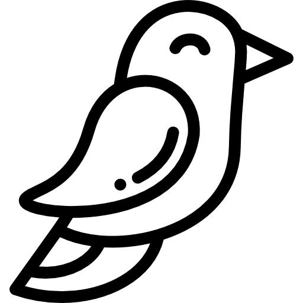

Pedra Azul
📍 Teresópolis - RJ
Trilha cercada por mata atlântica com vista panorâmica da serra.
Descubra paisagens incríveis, favorite locais e planeje sua próxima aventura.
📍 Teresópolis - RJ
Trilha cercada por mata atlântica com vista panorâmica da serra.

📍 Teresópolis - RJ
Águas cristalinas e ambiente perfeito para descanso e contemplação.

📍 Parque Natural
Um espaço silencioso e cercado pela natureza, ideal para relaxar e respirar.

📍 Serra dos Órgãos
Experiência intensa para aventureiros que buscam altitude e paisagens incríveis.

